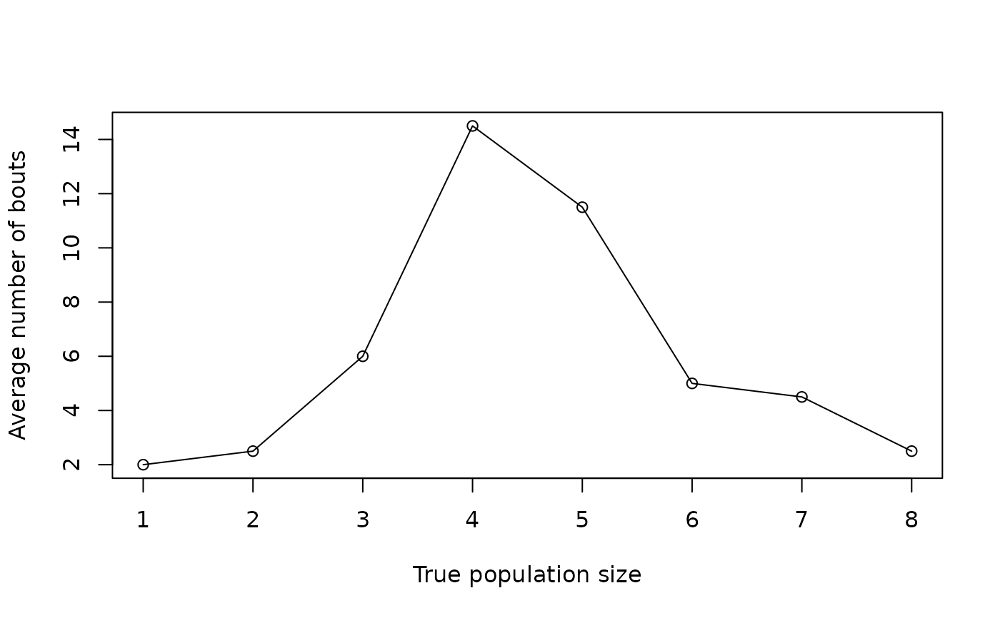

Evaluation of Sequential tests of Bayesian posterior probabilities
Source:R/STBP-eval.R
STBP.eval.RdObtains the average number of sampling bouts and the rate of acceptance for \(H:\mu > \psi\) or \(H:\mu < \psi\) across a range of true population densities, based on simulations. Sometimes called "operating characteristics".
Arguments
- obj
An object of class
"STBP".- eval.range
The evaluation range. A vector with a sequence of true population densities to evaluate. If the
hypothesisargument in the test is a trajectory (i.e., a vector), the evaluation range is a factor of the hypothesized trajectory. See details.- n
Sample size within bouts.
- prior
Single number with initial prior. Must be on the interval \([0,1]\).
- overdispersion.sim
A character string (if a function) or a a non-negative number specifying the overdispersion parameter used to generate simulated counts. Only required when using
"negative binomial"or"beta-binomial"as kernel densities. See details.- N
Number of simulations per true population density or trajectory being evaluated.
- seed
Optional seed for random count generation.
Value
A list with the average number of sampling bouts required to reach a
decision ($AvgSamples), and the rate of acceptance for \(H\) across
the provided range of population densities ($AcceptRate).
Details
The kernel probability density function to evaluate the test is that specified in the
argument density_func to create the "STBP" object, but overdispersion
can be different to generate simulated counts. If "negative binomial" or
"beta-binomial" are used as kernel densities for the test and
overdispersion.sim is not specified (NA), then the same specification of the test
is used to generate the counts. Ideally, overdispersion for simulations should include
uncertainty about the parameter to produce more robust test evaluations. For example,
if using a negative binomial kernel and the Taylor's Power Law approach
to obtain overdispersion, then overdispersion for simulations should be specified
as: $$k = \frac{\mu^2}{a \mu^b e^z - \mu}$$ where \(k\) is the overdispersion
parameter of the negative binomial distribution, \(a\) and \(b\) are parameters
of the Taylor's Power Law and \(z\) is a normally distributed variable with mean \(0\)
and standard deviation \(\sigma_{e}\), which is the root of the mean square error
for the regression used to estimate \(a\) and \(b\). See examples.
The evaluation range in the eval.range argument should cover relevant population
densities for which the test will be applied. These densities are often around the
threshold to check sampling sizes and error rates at those critical levels. In the case
of dynamic hypotheses (vectors), the range should be given as factors of the hypothesized
trajectory. For example, to evaluate this test for a hypothesis trajectory the
eval.range argument could be seq(0.1, 2, 0.1), so the evaluation runs from
\(10\) percent of the trajectory to twice the trajectory in \(10\) percent increments.
References
Binns, M.R., Nyrop, J.P. & Werf, W.v.d. (2000) Sampling and monitoring in crop protection: the theoretical basis for developing practical decision guides. CABI Pub., Wallingford, Oxon, UK; New York, N.Y.
Rincon, D.F., McCabe, I. & Crowder, D.W. (2025) Sequential testing of complementary hypotheses about population density. Methods in Ecology and Evolution. <https://doi.org/10.1111/2041-210X.70053>
Examples
# These examples are run with very few simulation runs (argument N), so they
# provide unrealistic results. For more reasonable demonstrations check the
# vignettes.
# Assuming a negative binomial count variable whose overdispersion parameter,
# k, varies as a function of the mean, and that the variance-mean relationship
# is well described with Taylor's Power Law, a function to obtain k can be:
estimate_k <- function(mean) {
a = 1.830012
b = 1.218041 # a and b are Taylor's Power Law parameters
(mean^2) / ((a * mean^(b)) - mean)
}
# Generate some counts to create an STBP object with the model specifications
counts3 <- rnbinom(20, mu = 5, size = estimate_k(5))
# Run the test to create the STBP object
test1F <- stbp_composite(data = counts3,
greater_than = TRUE,
hypothesis = 9,
density_func = "negative binomial",
overdispersion = "estimate_k",
prior = 0.5,
lower_bnd = 0,
upper_bnd = Inf,
lower_criterion = 0.01,
upper_criterion = 0.99)
#> Error in estimate_k(x): could not find function "estimate_k"
test1F
#> Error: object 'test1F' not found
# Model evaluation is carried out based on simulated counts, and more realistic
# counts could be generated if uncertainty about the overdispersion parameter is
# considered. A function to obtain values for the overdispersion parameter, k,
# with added stochasticity could be (following Binns et al. 2000):
estimate_k_stoch <- function(mean) {
a <- 1.830012
b <- 1.218041
(mean^2) /
((a * mean^(b) *
exp(truncdist::rtrunc(1,
"norm",
a = log(1 / (a * mean^(b - 1))),
b = Inf,
mean = 0,
sd = 0.3222354)))
- mean)
}
# where sd here is the the root of the mean square error for the regression
# used to estimate a and b. Note that this is a stochastic version
# of 'estimate_k'.
# Run model evaluation for testF1 with varying overdispersion and
# added stochasticity with very few simulations to save time.
eval1 <- STBP.eval(test1F,
eval.range = seq(2, 11),
n = 1, prior = 0.5,
overdispersion.sim = "estimate_k_stoch",
N = 3)
#> Error: object 'test1F' not found
plot(seq(2, 11), eval1$AvgSamples, type = "o", xlab = "True population size",
ylab = "Average number of bouts")
#> Error in h(simpleError(msg, call)): error in evaluating the argument 'y' in selecting a method for function 'plot': object 'eval1' not found
plot(seq(2, 11), eval1$AcceptRate, type = "o", xlab = "True population size",
ylab = "Acceptance rate of H")
#> Error in h(simpleError(msg, call)): error in evaluating the argument 'y' in selecting a method for function 'plot': object 'eval1' not found
# Alternatively, the evaluation could be carried out omitting variation about
# overdispersion. For that the overdispersion argument is omitted and the same
# specification of the model is used. Very few simulations to save time.
eval2 <- STBP.eval(test1F,
eval.range = seq(2, 11),
n = 1, prior = 0.5,
N = 3)
#> Error: object 'test1F' not found
plot(seq(2, 11), eval2$AvgSamples, type = "o", xlab = "True population size",
ylab = "Average number of bouts")
#> Error in h(simpleError(msg, call)): error in evaluating the argument 'y' in selecting a method for function 'plot': object 'eval2' not found
plot(seq(2, 11), eval2$AcceptRate, type = "o", xlab = "True population size",
ylab = "Acceptance rate of H")
#> Error in h(simpleError(msg, call)): error in evaluating the argument 'y' in selecting a method for function 'plot': object 'eval2' not found
# When there is no overdispersion (poisson or binomial distributions) the
# procedure is much simpler
test2F <- stbp_composite(data = counts3,
greater_than = TRUE,
hypothesis = 5,
density_func = "poisson",
prior = 0.5,
lower_bnd = 0,
upper_bnd = Inf,
lower_criterion = 0.01,
upper_criterion = 0.99)
test2F
#>
#> Sequential test of Bayesian posterior probabilities
#> Family: poisson
#> H: mu > 5
#> Probability: 1 from 17 sampling bouts
#> Recommendation based on provided criteria: accept H
# Overdispersion is omitted here. Again, very few simulations (N) to save time.
eval3 <- STBP.eval(test2F,
eval.range = seq(1, 8),
n = 1,
prior = 0.5, N = 3)
plot(seq(1, 8), eval3$AvgSamples, type = "o", xlab = "True population size",
ylab = "Average number of bouts")

plot(seq(1, 8), eval3$AcceptRate, type = "o", xlab = "True population size",
ylab = "Acceptance rate of H")
# Variations if n, the sample size within each bout, can also be changed
# (not possible in SPRT)!
## End (Not run)